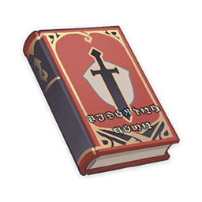

Mondstadt · Books & Literature
Ballads of the Squire
A two-volume ballad collection, said to come from Ragnvindr the Dawn Knight, recalls his service as a squire and an encounter with a sword-dancer who challenged Mondstadt’s aristocracy.

Two ballads with an uncertain attribution
The collection has two volumes. Their descriptions say these ballads were passed down from the aristocratic period and are said to come from Ragnvindr the Dawn Knight. That attribution is part of the in-game description; the book does not explain who copied or preserved the poems.
The volumes present a first-person memory of Ragnvindr’s squire years and his encounter with a sword-dancer. Read as ballads, they preserve a literary account of Mondstadt under the aristocracy rather than a neutral chronicle.
Volume I: a squire sees the city at night
The speaker walks Mondstadt’s streets and sees both arrogant aristocrats and impoverished people. At night, the city becomes a web in which some feast while others are trapped. The speaker hears chains, grieving families, and a young girl pleading for Barbatos’ mercy.
The speaker’s fellow knights and superiors praise themselves as the city’s protectors, but he cannot turn his attention from suffering in the streets. The contrast makes the first volume a critique of the aristocratic order and of its defenders’ self-image.
Volume II: the sword-dancer arrives
At dawn, a dancer enters Mondstadt with her hands and feet in chains. The poem describes her silence as carrying a song of freedom and a brighter future beyond the city walls. The item description calls this a story of Ragnvindr’s friendship with the dancer.
The speaker asks why she wants to overthrow the aristocrats and repeats the assumption that they are the first among the people. Her reply challenges that hierarchy: if he once knew freedom as a companion, why place the rulers’ lives on a pedestal? The exchange marks a change in the speaker’s perspective without spelling out every step of it.
Songs that carry older myths
The dancer tells her listeners stories about the rulers’ better ancestors, divine power, angels, gods, dragons, and the peoples of the land. She turns each myth and legend into song, which the wind carries across Mondstadt.
The text links music and storytelling with the spread of ideas that can challenge authority. It does not identify every myth she sings or provide a complete history of the Wanderer’s Troupe through this scene.
The arena and the buried sword
The ballad ends the dancer’s story in the aristocrats’ arena. Her sword sings once more in what the poem calls her final masterpiece, but the performance stops short of perfection. A nameless knight retrieves the weapon from the battlefield and buries it where gentle winds meet in communion.
The poem does not name the knight or pinpoint the burial place. A specific grave or exact location should not be inferred from this verse alone.
Connections to the Dawnlight Swordswoman
Other item stories give the sword-dancer a wider context. The weapon The Flute calls its wielder the Dawnlight Swordswoman, while the Wanderer’s Troupe artifact story describes a charismatic swordswoman among the troupe. Volume II itself calls its dancer the troupe’s dawnlight, making these records mutually relevant.
Together, the ballad, weapon, and artifact stories connect the dancer to the Troupe and to resistance against the aristocracy. The ballad’s verses remain a poetic version of events, and they should not be used to fill in details that the other records leave unstated.
What the ballads establish—and what they leave open
The item descriptions establish a two-volume collection, its traditional attribution to Ragnvindr, and its subjects: his squire years and his friendship with a sword-dancer. The poems portray social suffering, a challenge to aristocratic privilege, the spread of songs, and the dancer’s final battle.
The collection does not provide independent proof of its authorship, a full biography of the dancer, or the exact site where her sword was buried. The Flute and Troupe stories add context, but the distinction between a ballad’s presentation and corroborating item lore still matters.
This is an original CoreGG reading guide, not an official HoYoverse article or a reproduction of the game text. Source links below identify the records used so you can check the original context.
Sources & references
Check these sources for the original game text and reference trail.